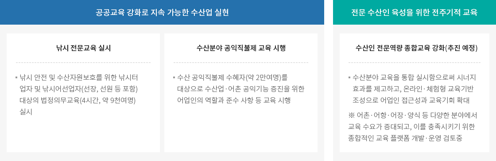
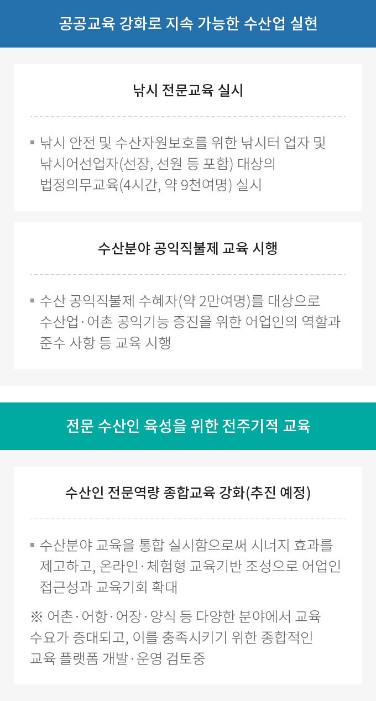
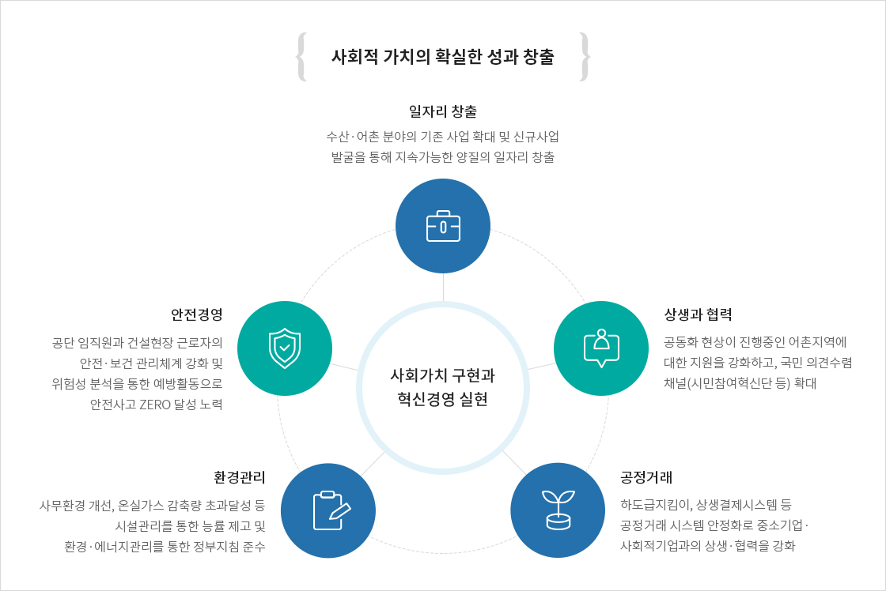
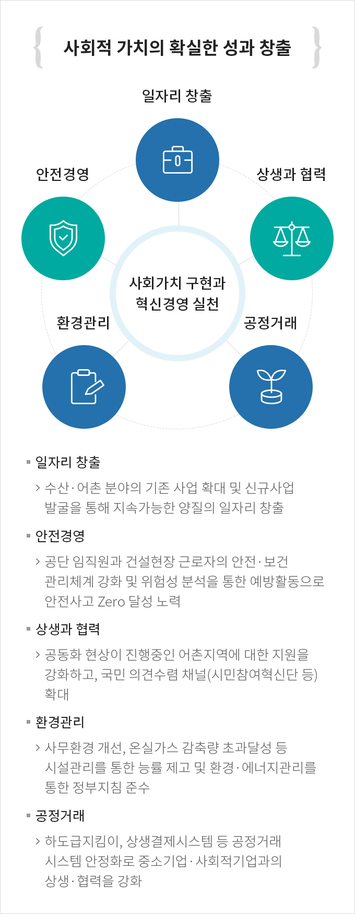

주요업무
- 홈
- 기관소개
- 일반현황
- 주요업무
가고싶고 살고싶은 어촌구현
삶터와 쉼터가 공존하는 특색있는 어촌
-
어촌·어항 재생
- 어촌·어항재생사업추진지원단 운영 : 어촌어항재생 사업운영 및 관리지원
- 어촌어항재생 사업 위탁수행 : 총 250개소중 130개소 위탁수행중
-
어촌관광 활성화
- 어촌체험마을 지원 : 컨설팅, 등급결정, 마을 역량강화 등
- 어촌체험마을 및 안심어촌 홍보 : 어촌관광 콘텐츠 발굴 및 다양한 매체를 활용한 대국민 홍보
- 바다해설사 양성 : 어촌·해양 관광해설 전문가로써 252명 등록
-
어촌지역개발 및 어촌주민 역량 강화
- 일반농산어촌개발사업 추진
- 어촌주민 역량강화 : 지역 특성과 주민수요 등 지역 특화에 중점
사람이 돌아오는 살고 싶은 어촌
귀어귀촌 활성화 지원
- 귀어귀촌 종합센터 운영 및 귀어귀촌 박람회 개최
- 귀어닥터 운영 : 수산 전문가 및 귀어 정착인을 활용한 1:1 컨설팅
어촌특화지원센터 운영 (전국 4개소 운영 : 경남,제주,인천, 충남)
- 어촌특화사업 발굴 : 어촌의 유·무형 자원을 활용한 융복합사업
- 소비촉진 지원 : 어촌 특화상품 유통체계 구축 및 판로개척 지원
국민이 신뢰하는 미래수산 구축
안전하고 활력넘치는 국민의 어항 구현
-
어항시설 안전관리
- 어항시설 안전점검 : 115개 국가어항 및 76개 지방어항 안전점검
- 어항시설 유지보수 : 국가어항 기본시설 유지보수와 안전시설 확대
- 국가어항 기초조사 : 국가어항 현황 및 이용실태를 DB화하여 어항정책 및 개발계획 수립에 활용
-
어항관리선 운영
부유·침적폐기물 제거 연간 3만여톤 수준
수거·처리재난 등 지원 재해발생시 지원
태풍피해, 적조, 해파리·모자반 등
첨단기술로 실현하는 스마트 수산·어촌어항시설 안전관리
-
스마트 어항 유지관리체계 구축(시범사업)
- 동·서·남해 권역별 도서지역 국가어항 3개항에 안전·유지관리를 위한 원격 모니터링체계 구축(지능형 CCTV및 LiDAR센서 설치 등)
-
어촌어항관리시스템 운영
- 어촌·어항 이용 및 민원 업무 등의 운영관리, 어항의 안전·환경 ·건설 관리 업무지원 및 관련정보 개방을 위한 시스템 운영
수산업 미래대응을 위한 그린·스마트 전환
-
연근해어장 생산성 개선 지원
- 어장 개선 : 연근해 주요어장내 유실·침적어구 수거 및 교육 ·홍보
- 어장 재생 : 노후·과밀 어장에 대한 환경개선, 재배치 및 모니터링
-
친환경·스마트 양식어업 육성지원
- 사업관리 : 정부 지원 친환경 양식 지원자 대상 컨설팅, 모니터링
- 창업·기술지원 : 양식창업을 구상-실현까지 One-stop으로 지원
- 위탁수행 : 친환경·스마트 시스템 전환을 위한 위탁사업 수행
지속 가능한 수산업을 위한 인적기반 마련


공공교육 강화로 지속 가능한 수산업 실현
- 낚시 전문교육 실시 - 낚시 안전 및 수산자원보호를 위한 낚시터 업자 및 낚시어선업자(선장, 선원 등 포함) 대상의 법정의무교육(4시간, 약 9천여명) 실시
- 수산분야 공익직불제 교육 시행 - 수산 공익직불제 수혜자(약 2만여명)를 대상으로 수산업·어촌 공익기능 증진을 위한 어업인의 역할과 준수 사항 등 교육 시행
전문 수산인 육성을 위한 전주기적 교육
- 수산인 전문역량 종합교육 강화(추진 예정) -
수산분야 교육을 통합 실시함으로써 시너지 효과를 제고하고, 온라인·체험형 교육기반 조성으로 어업인 접근성과 교육기회 확대
※ 어촌·어항·어장·양식 등 다양한 분야에서 교육 수요가 증대되고, 이를 충족시키기 위한 종합적인 교육 플랫폼 개발·운영 검토중
사회가치 구현과 혁신경영 실현


사회적 가치의 확실한 성과 창출
사회가치 구현과 혁신경영 실현
- 일자리 창출 - 수산·어촌 분야의 기존 사업 확대 및 신규사업 발굴을 통해 지속가능한 양질의 일자리 창출
- 안전경영 - 공단 임직원과 건설현장 근로자의 안전·보건 관리체계 강화 및 위험성 분석을 통한 예방활동으로 안전사고 Zero 달성 노력
- 상생과 협력 - 공동화 현상이 진행중인 어촌지역에 대한 지원을 강화하고, 국민 의견수렴 채널(시민참여혁신단 등) 확대
- 환경관리 - 사무환경 개선, 온실가스 감축량 초과달성 등 시설관리를 통한 능률 제고 및 환경·에너지관리를 통한 정부지침 준수
- 공정거래 - 하도급지킴이, 상생결제시스템 등 공정거래 시스템 안정화로 중소기업· 사회적기업과의 상생·협력을 강화
투명·청렴 경영으로 본원적 공공가치 실현
-
투명하고 청렴한 공단
- NCS 기반 블라인드 채용 정착(17) 및 성과관리의 투명성 제고 등을 통해 공직복무 최우수기관 지속유지
-
인권경영 확산
- '19년 인권경영체계 구축 기반으로 '20년 실효성 강화 제도 보완, 인권영향평가* 환류 및 실행과제 추진으로 인권경영 문화확산
-
상생과 협력
- 제1기 FiPA 서포터즈'휘파랑이' 출범을 통해 국민과 함께 만들어가는 공단 실현
혁신을 통한 경영 효율성 제고
-
열린혁신FIPA 혁신 종합 추진계획(23개 과제)을 수립·시행·모니터링하고 혁신참여채널(국민,직원) 구축 및 시민참여혁신단 참여로 혁신 실행력 강화
-
성숙한 노사관계노사 간의 신뢰 구축을 위한 다양한 활동과 노사집행부와의 상시 협의체 운영으로 갈등 해소 등 성숙한 노사관계 정립
-
효율적인 경영관리일하는 방식 개선을 위한 4대 추진 전략(표준관리체계, 정보 프로세스 연계, ERP 고도화, 빅데이터 기반) 마련 및 소위원회, 현장 이사회 정례화 등
-
소통과 화합의사소통 강화 프로그램 운영으로 임직원 간 상호 신뢰도 및 업무 효율성 향상으로 고객이 만족하는 공공기관 실현
-
갈등관리계층별 교육 및 스트레스 해소 프로그램 지원 및 직무스트레스, 대인관계 등 상담 근로자 지원 프로그램 운영
-
일·가정 양립근로시간 단축 및 가족 친화 문화 조성 및 선택적근로시간제 운영 개선을 통한 근로시간 단축 추진
-
조직 적응력 강화실무형 OJT 교육, 참여형 교육 프로그램 마련을 통한 신규직원의 조기 적응 및 실무능력 제고
※ 조직 적응력 강화 : 경영·사업 분야별 업무 매뉴얼 고도화로 신규직원의 업무 이해도 제고 및 안정적 조기 정착 도모